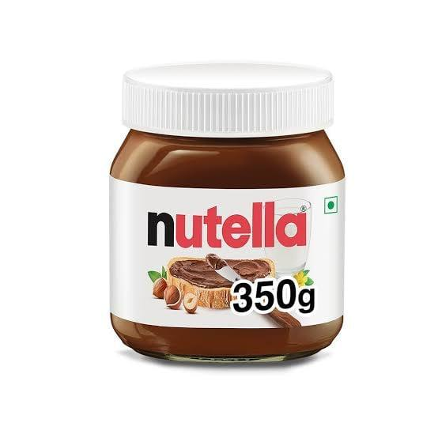
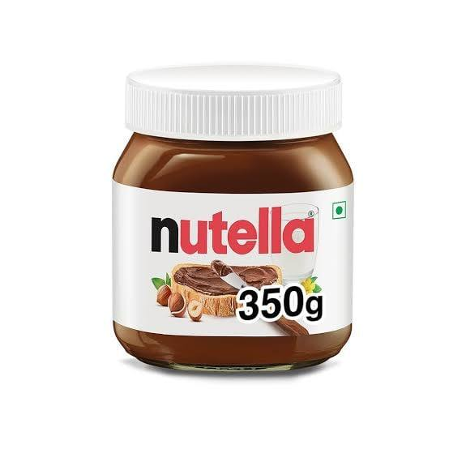

The Egyptian boycott of Israeli products is a significant movement that emerged as a result of political tensions between the two nations.On the front of food products , Egyptians have boycotted many of them as an effective way to support their Palestinian brothers and sisters.Some have called for the purchase of purely Egyptian products.

Egyptians have boycotted certain chocolate products as Milka Due to its perceived significant contribution to supporting Israel.
milka.comOn the appetizers front, Egyptians have boycotted some fried chip products such as lays chips
lays.com 

Indeed, Nutella is widely used in the production of various desserts and sweets, making it one of the most popular food products. However, due to boycotting reasons, some individuals or groups have chosen to boycott Nutella. They have sought suitable alternatives to replace it in their recipes and consumption habits
nutella.comPringles, too, is among the items that Egyptians boycotted in support of Palestine, as the owning company is known to support Israel.
Egyptians have boycotted certain chocolate products as Milka,Cadbury dairy milk, mars and Snickers and turned to local alternatives. as break, Despacito, marvel and corona,which is an Egyptian company that was established in 1919 and was the first confectionery company in the Egyptian market.
corona.comTiger is a pure Egyptian product that Egyptians turned to after boycotting Lays. It has emerged as a strong and competitive alternative in the Egyptian market.
Tiger.comreplaced them with tempo, ulker, droo and lampada, as they are well-established Egyptian companies with a strong presence in the Egyptian market.
ulker.comAttention has shifted towards the alternative to Nutella, which is Maxitella. It offers similar quality, a lower price, and supports the local product.
maxtella.com
Big Chips is an Egyptian-made product that serves as a strong competitor to Pringles.